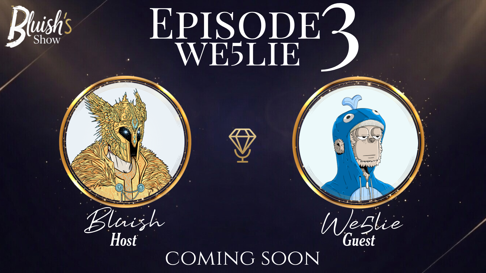
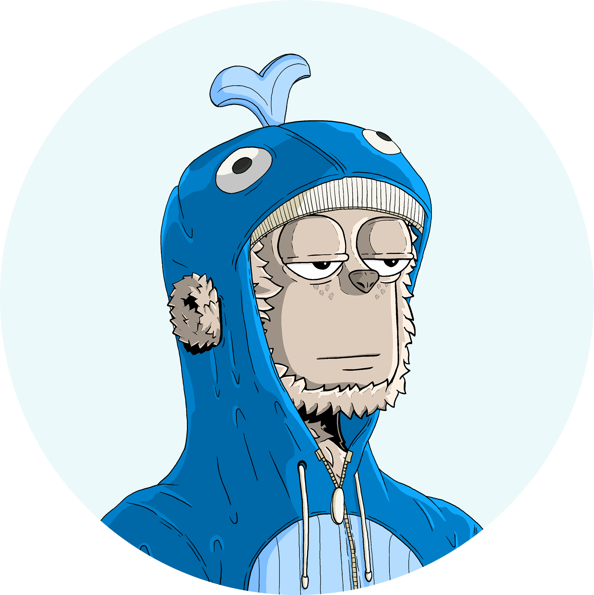

Episode 3 – We5lie's Story

Wesley went from making bad YouTube videos at 10 to becoming one of the more recognizable graphic designers in the DeGods ecosystem — and somehow ended up in Singapore showing Frank a briefcase of custom watches. In this episode he breaks down how he got there, what he's building now, and why he thinks this year is finally his.
Listen Now on SpotifyAbout Wesley
Wesley is a UK-based graphic designer who found his way into Web3 through a marketing apprenticeship during COVID. He worked two jobs simultaneously for months before going full-time in the space, eventually landing roles at Floor Protocol and DeGods — where he became known for his design work and his 1-of-1 Youth DeGod. After his time at DeGods wrapped up, he had his next moves sorted by Wednesday of the same week. He's now running three projects at once, including a food delivery platform taking on Uber Eats in the UK, and two other ventures he can't fully talk about yet. In this episode he's pretty open about how everything happened — the good decisions, the lucky breaks, and the ones that paid off way more than expected.
Episode Highlights
Key Quotes
"Just try stuff out regardless of what people say — that's always been my thing."
"The monetary ROI wasn't really there — but what it brought me in terms of career and opportunities, it paid back way too many times over."
"Someone obsessed with their craft will always outgrow someone who's just naturally talented."
"It's about placement. I put myself in the right room and the opportunity came."
"Work hard, play hard — sounds simple but I've lived by it since I was a kid."
"This year is the year of the horse. It's my year. Everything is slowly unraveling."
Article

I wrote a full breakdown of this episode on X, covering We5lie's journey, mindset, and how he built momentum early.
Read Full Article on XConnect with Wesley

X